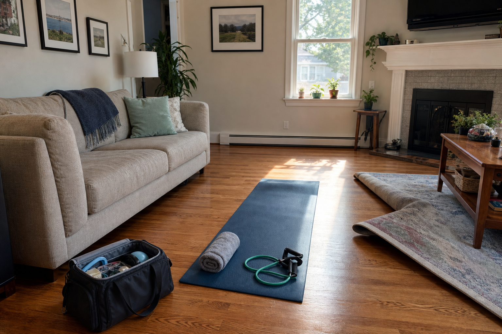
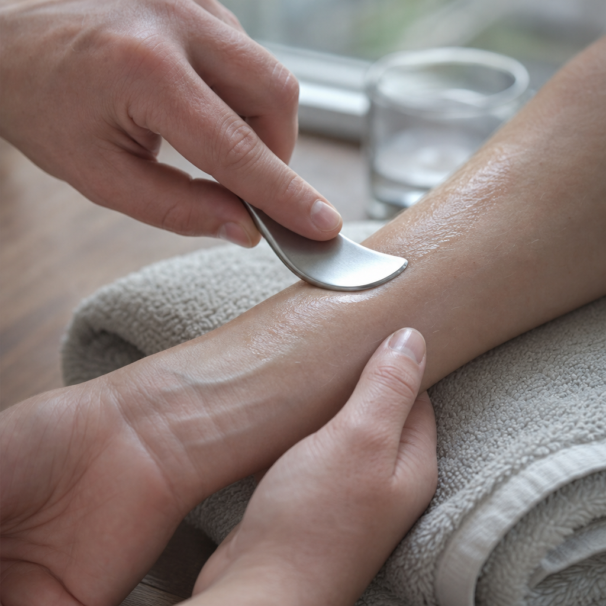

I come to your house or your office. For the whole session it is you and a Doctor of Physical Therapy, hands on, working the actual problem. That is the practice. Everything else about how it runs follows from protecting that hour.
Most of what makes physical therapy frustrating is not the therapy. It is everything arranged around it. So here is the list of things this practice does not do to you.
Every line above is drawn from how this practice actually works, in Nicole's own description of it.

Soft tissue mobilisation, joint mobilisation, muscle energy, trigger point release, myofascial release, passive stretching and kinesiotaping.
An evidence-based form of instrument-assisted soft tissue mobilisation. The GTS after my name means I am certified in it.
Built around what your assessment actually showed, not a photocopied sheet.

I spent more than eighteen years in outpatient orthopedics. After years in traditional clinic settings I found myself frustrated as the demand to see more patients in shorter periods of time increased, and as insurance company control of patient care increased along with it. So I built this instead.
A gnarly oak is a tree that grew through something and is stronger for the shape it took. That seemed like the right name for what I do.
I work for you, not insurance companies.
Email me and describe what hurts, how long it has been going on, and what you are trying to get back to doing. I will tell you honestly whether I can help.
Email NicoleAn unsolicited design concept for Gnarly Oak Physical Therapy and Wellness, prepared by Ohtari Labs. This is not their website.